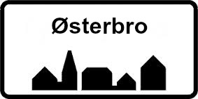
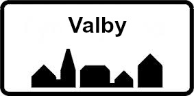

<!--
  Generated template for the PLG page.

  See http://ionicframework.com/docs/v2/components/#navigation for more info on
  Ionic pages and navigation.
-->
<ion-header>

  <ion-navbar>
    <ion-title> Butik </ion-title>
  </ion-navbar>

</ion-header>

<ion-content class="butik-background-page">

  <ion-card>
    
    <div class="card-title">Nørrebro</div>
    <div class="card-subtitle">Adresse</div>
  </ion-card>

  <button class="butikBtn" ion-button (click)="chooseNorrebro()" (click)="pageThree()">Vælg butik Nørrebro</button>

  <ion-card>
    
    <div class="card-title">Vesterbro</div>
    <div class="card-subtitle">Adresse</div>
  </ion-card>

  <button class="butikBtn" ion-button (click)="chooseVesterbro()" (click)="pageThree()" >Vælg butik Vesterbro</button>

  <ion-card>
    
    <div class="card-title">Østerbro</div>
    <div class="card-subtitle">Adresse</div>
  </ion-card>

  <button class="butikBtn" ion-button (click)="chooseOsterbro()" (click)="pageThree()">Vælg butik Østerbro</button>

  <ion-card>
    
    <div class="card-title">Valby</div>
    <div class="card-subtitle">Adresse</div>
  </ion-card>

  <button class="butikBtn" ion-button (click)="chooseValby()" (click)="pageThree()">Vælg butik Valby</button>
  
  
  <!-- KNAP TIL AT GÅ TIL NÆSTE SIDE ELLER BARE VÆLG BUTIK?? -->
  <button ion-button (click)="pageThree()"> Vælg senere </button>
  <!-- KNAP TIL AT GÅ TIL NÆSTE SIDE ?? -->

</ion-content>